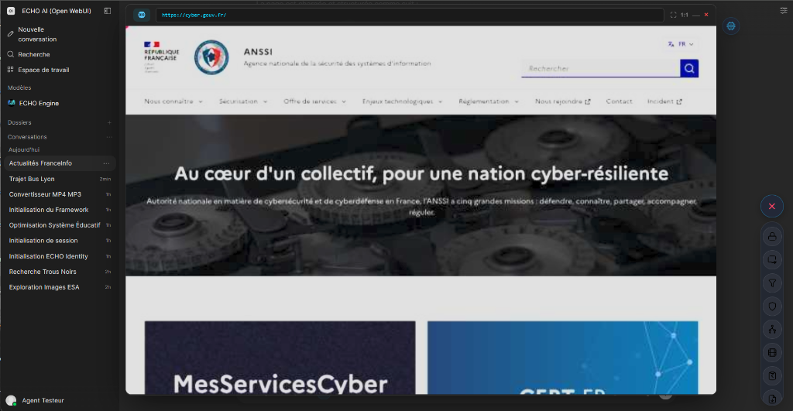
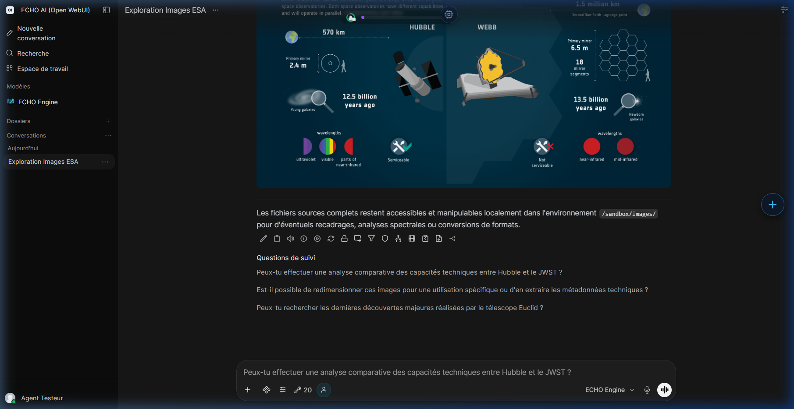
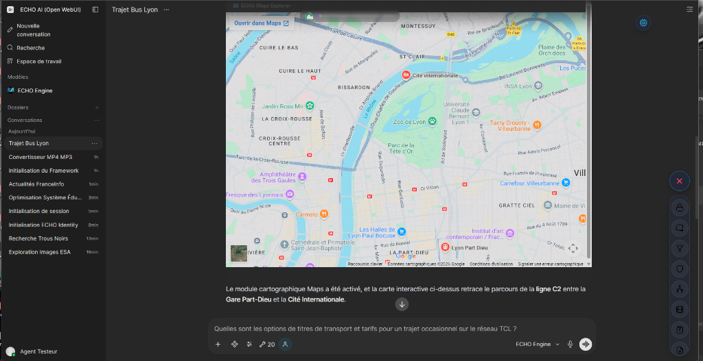

11. Recherche & Navigation
L'IA n'est pas enfermée dans une bulle. ECHO dispose de capacités d'exploration qui lui permettent d'interagir avec le monde extérieur (le Web) et avec votre monde intérieur (votre Espace Personnel de fichiers), toujours sous votre contrôle et dans le respect strict de votre vie privée.
1. Recherche Web et Navigation Autonome

ECHO possède un moteur de recherche souverain intégré qui ne traque pas vos requêtes. S'il a besoin de confirmer une information ou de trouver une actualité récente, il va d'abord chercher sur le web.
Si la simple recherche ne suffit pas (par exemple pour extraire des données d'un site complexe), l'IA prend le contrôle d'un Navigateur Web fantôme. Elle est capable d'ouvrir des pages, de cliquer sur des boutons, de faire défiler l'écran, et d'analyser visuellement le contenu comme le ferait un humain. Cela lui permet d'accomplir des missions de recherche complexes en autonomie.
2. Explorateur de l'Espace Personnel

Votre Espace Personnel est votre coffre-fort de fichiers. Lorsque vous téléversez un PDF de 500 pages, une archive de code source ou une image haute résolution, ECHO peut les analyser en profondeur. Il peut lire le texte ligne par ligne, inspecter les images, et croiser les informations de plusieurs fichiers.
Le système vous garantit un cloisonnement strict : vos fichiers vous appartiennent et sont inaccessibles aux autres utilisateurs du système.
3. Intelligence Spatiale (Cartographie)

ECHO est capable de générer des coordonnées géographiques et de créer des cartes interactives. Si vous lui demandez un itinéraire ou l'analyse d'une zone géographique, il génèrera une carte dynamique que vous pourrez manipuler directement depuis l'interface.
⚙️ Dossier d'Ingénierie & Spécifications
1. Web Intelligence & Browser Worker (browser_api.py v5.231.20.1,
echo_browser_lib.py v5.231.20.1 & navigation_engine_tool.py v5.231.20.1)
Le Browser Worker (FastAPI, IP .22, Port 5002) pilote une instance Chromium
Headless via Playwright (flux vidéo bridé à 9 FPS pour le Cockpit de Rejeu et cache LRU
plafonné à 20 sessions).
- Ciblage Géométrique & Lidar Check : L'agent combine une Vision Grid (pas de
48 px) avec le recadrage CDP sans altération du viewport (
action_zoom_in/action_zoom_outprojetant un Viseur Rouge au centre) et l'actionclick_current. Avant chaque clic, unwait_for_settleet un Lidar Check recalibrent la bounding box et valident le hit-test (document.elementFromPoint) sur une carte DOM à indexation générationnelle (gen:n). - Furtivité WAF Bypass : Suppression atomique du descripteur
navigator.webdriversur le prototype, instanciation native dePluginArray, spoofing WebGL (RTX 3060) et proxys JS haute fidélité pour franchir Cloudflare et DataDome. - Outils de Navigation & Sessions Éphémères Parallélisables : Propagation explicite de
chat_iden parallèle desession_id(sub_sidouephem_session_id) vers/start_sessionet/actionafin de router les téléchargements vers la conversation parente tout en isolant le contexte Playwright. Inclutdelegate_web_browsing(boucle OODA isolée parsub_sid),close_web_thread(purgeant et réinitialisantsub_sid),analyze_web_page(exécuté surMODEL_APOLLOavecthinking="medium"dans une session éphémère{base_session_id}_analyze_<hex>nettoyée dansfinally: await browser.reset_session()),archive_web_page(session éphémère{base_session_id}_archive_<hex>et indexation RAG asynchrone) etprune_heavy_context(élagage proactif au-delà dePRUNE_CONTENT_THRESHOLD = 60 000caractères).
2. Recherche Souveraine & Data Broker (sovereign_web_search.py v5.229.0.0 &
delegate_to_data_broker.py v5.229.0.0)
- Sovereign Web Search : S'appuie sur le proxy local
echo-searxng(port 8080) et DuckDuckGo viasearch_instant_answer,search_webetdelegate_deep_research(agent de recherche profonde multi-tours, budget par défaut200appels ; en fin d'exécution, l'outil invoque explicitementreset_session()sur le Browser Worker en plus de purger la session SQLite éphémèresub_sid). - Data Broker (
ask_data_broker) : Délégation de la collecte et du croisement de données volumineuses à un sous-agent dédié.
3. Vault Explorer (file_content_explorer.py v5.231.33.3) & Maps Grounding
(gemini_maps_grounding.py v5.229.0.0)
- Isolement & Espaces : Résolution étendue des chemins
(
_resolve_extended_file_path) vérifiant strictement leuser_idà travers les espacesfiles(Vault),mainetsandbox(Codex). Lecture paginée par blocs de 16 Ko (read_raw_file_content), prévisualisation image isolée par conversation (show_image_to_userviachat_id), extraction chirurgicale ciblée (semantic_probe) et distillation multimédia descriptive horodatée (read_multimedia_file) avec décimation vidéo à 1 fps en résolution native + audio intact (-c:a copy) et segmentation Map-Reduce en mémoire vive sans recouvrement (pipe:1/pypdfBytesIO) au-delà de 30 Mo ou 45 min par million de tokens. - Maps Grounding : Ancrage spatial générant des données topologiques projetées côté client dans une carte interactive (HUD).